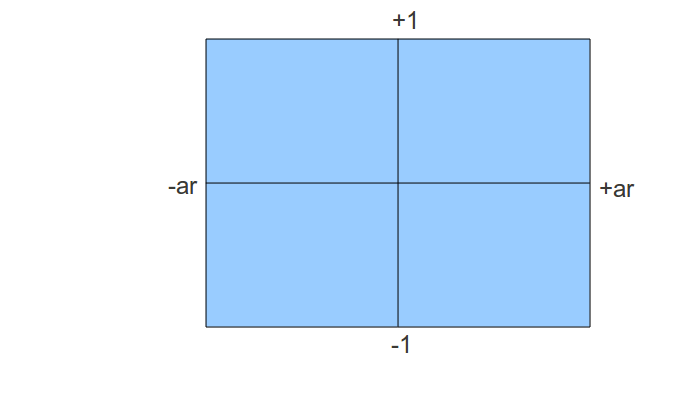
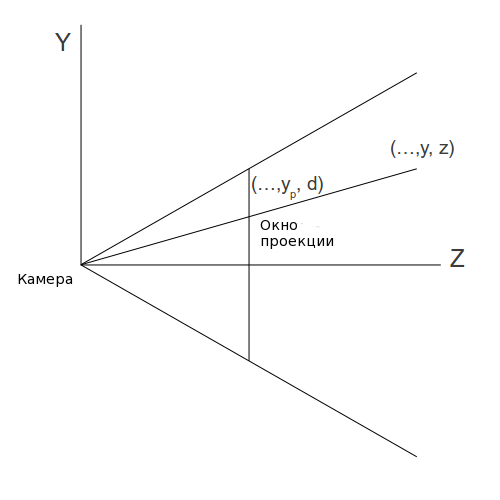

Урок 12 - Проекция перспективы
Наконец мы добрались до пункта, характеризующего 3D графику лучше всего, - проекция из 3D мира на 2D плоскость, сохраняя при этом глубину. Хорошим примером будет изображение железной дороги, которая уходя в даль становится одной точкой.
Мы собираемся найти преобразование, удовлетворяющее требованиям выше и у нас еще одно дополнительное условие: мы хотим представить его "ярусным", и что бы у клипера жизнь была проще, требуется переводить координаты в пространство экрана от -1 до +1. Это значит, что клипер будет делать свою работу не заботясь о пространстве экрана и расположения ближнего и дальнего рубежей.
Проекция перспективы будет принимать от нас 4 параметра:
- Соотношение сторон - коэффициент между шириной и высотой прямоугольной области, на которую и будет осуществляться проекция.
- Поле зрения по вертикали: угол обзора камеры, через который мы видим мир.
- Позиция ближней Z плоскости. Позволяет нам обрезать объекты, находящиеся слишком близко к камере.
- Позиция дальней Z плоскости. Позволяет нам обрезать объекты, находящиеся слишком далеко от камеры.
Соотношение сторон становится необходимым из того, что мы собираемся представить все координаты в нормированном пространстве, ширина которого равна его высоте. Так как такая ситуация у мониторов довольно редкая, обычно ширина больше чем высота, нам необходимо как-то "конденсировать" точки на горизонтальной линии по сравнению с вертикальной. Это позволит нам выжать больше точек по X компоненте в нормированном пространстве, что в итоге позволит в итоге "видеть" больше по ширине, чем по высоте.
Вертикальное поле зрения позволит нам увеличивать и уменьшать мир. Рассмотрим следующий пример. На картинке слева угол обзора больше, что делает объекты меньше, а на изображении справа угол меньше, что увеличивает объект. Заметьте, что это влияет на расположение камеры, делая ее немного более интуитивной. Справа (где мы увеличиваем с малым углом обзора) камере требуется быть дальше, и на левой стороне она ближе к плоскости проекции. Хотя, вспомним, что нет никакой разницы, ведь мы преобразуем координаты проекции в экран, поэтому позиция камеры не играет роли.

Начнем мы с определения расстояния плоскости проекции до камеры. Эта плоскость будет параллельна плоскости XY. Очевидно, видна будет не вся плоскость из-за ее огромных размеров. Мы сможем увидеть вещи из прямоугольной области (называемой окном проекции), которая имеет те же пропорции, что и наш экран. Соотношение сторон подсчитывается так:
ar = ширина экрана / высота экрана
Давайте для удобства выберем высоту в 2 раза меньше ширины, тогда соотношение сторон будет равно 2 (по формуле выше). Если мы поместим камеру в начало координат и посмотрим на область с точки зрения камеры, мы увидим:

Все, что выходит за пределы этого прямоугольника, будет обрезано и мы видим, что координаты внутри будут иметь Y компоненту в требуемом отрезке. Но X координата пока что немного больше, но мы это исправим позднее.
Теперь посмотрите на это сбоку (на плоскости YZ):

Мы найдем расстояние от камеры до плоскости проекции используя высоту обзора по вертикали (обозначается углом альфа):

Следующий шаг - это подсчет проецированных координат X и Y. Рассмотрим следующее изображение (смотрим на плоскость YZ).

У нас есть точка в 3D пространстве с координатами (x,y,z). Мы хотим найти (xp,yp), которые преобразуют проецированные координаты на плоскость проекции. Так как X компонента не видна на этой схеме, то мы начнем с Y. Согласно правилу подобных треугольников, мы получаем следующее:

И то же самое для X координаты:

Так как размер нашего окна проекции равен 2*ar (ширина на 2 высоты), мы знаем, что точка в 3D пространстве внутри нашего окна, если она проецируется в точку, координата X которой в пределах от -ar и до +ar, и проецированная Y координата между -1 и +1. Поэтому Y компонента нормирована, но X еще нет. Мы можем нормировать Xp просто поделив на соотношение сторон. Это означает, что точка, имевшая X равным +ar теперь имеет равным +1, что расположит её на правой стороне экрана. Если X был равным +0.5 и стороны соотносятся как 1.333 (такое например у экрана с разрешением 1024x768), новая координата X равна 0.375. Подводя итоги, деление на соотношение сторон позволяет конденсировать точки по оси X.
Итак, мы имеем следующие выражения для X и Y:

Прежде чем завершить процесс, давайте рассмотрим матрицу проекции на данный момент. Это значит, что преобразования выше должны быть представлены в виде матрицы. Теперь рассмотрим задачу. В обоих выражениях нам необходимо разделить X и Y на Z, который является элементом в векторе позиции. Но значение Z меняется от вершины к вершине, поэтому нельзя поместить его в матрицу, проходящую все вершины. Что бы понять это лучше, подумайте о ряде матриц (a, b, c, d). Теперь нам необходимо получить значение вектора, для которого будет справедливо следующее:

Это скалярное произведение между верхним вектором матрицы с вектором позиции, который дает итоговое значение X координаты. Мы можем выбрать 'b' и 'd' равными 0, но мы не можем найти 'a' и 'c', которые необходимы слева, а получены могут быть только справа. Решение принятое OpenGL - это разделение преобразований на 2 этапа: умножение на матрицу проекции следует за делением на значение Z как отдельный шаг. Матрица предоставляется приложением и шейдер должен включать умножение ее на позицию. Деление на Z жестко задано в GPU и принимает участие в растеризаторе (где-то между вершинным и фрагментным шейдерах). Как GPU узнает какую вершину, выпущенную вершинным шейдером делить на ее Z значение? просто - встроенная переменная gl_Position продумана для этой работы. Теперь осталось только найти матрицу, которая будет подсчитывать проецированные значения для X и Y.
После умножения на эту матрицу GPU может поделить на Z для нас автоматически, и мы получим тот результат, который хотели. Но есть еще одна сложность: если мы умножим матрицу на вектор позиции, а затем поделим на Z, то мы потеряем Z координату, потому, что для всех вершин она станет равна 1. Настоящее значение Z должно быть сохранено для дальнейшего теста глубины. Трюк в том, что мы записываем исходное значение Z в компоненту W итогового вектора и делим только XYZ на W вместо Z. W сохранит исходное значение Z, которое может быть использовано для теста глубины. Автоматическое деление gl_Position на его W и называется делением перспективы.
Мы можем теперь генерировать промежуточную матрицу, которая заменит 2 формулы выше, а так же перенесет Z в W элемент:

Как я говорил ранее, мы хотим нормировать значение Z, что бы облегчить работу клиперу, что бы он не задумывался об ближнем и дальнем значениях Z. Хотя матрица выше обратит Z в 0. Зная то, что после преобразования вектора система сама автоматически найдет перспективу, нам необходимо выбрать значения для третьей строки матрицы, что бы любое значение Z из промежутка (т.е. NearZ <= Z <= FarZ) было отображено в отрезок [-1,1]. Такое отображение состоит из 2 этапов. В первом мы уменьшаем отрезок [NearZ, FarZ], пока его длина не будет равна 2. Затем сдвигаем так, что бы начало совпадало с -1. Уменьшение Z значения и его перемещение заменяется общей функцией:

Но следующее деление с правой стороны функции:

Теперь нам надо найти значения A и B, которые после будут перенесены в [-1,1]. Мы знаем, что когда Z соответствует NearZ, итог будет -1, и когда Z соответствует FarZ результат будет равен 1. Это можно записать так:

Теперь нам необходимо выбрать третью строку матрицы как вектор (a b c d), который будет удовлетворять:

Мы можем выбрать 'a' и 'b' равными 0, поскольку мы не хотим, что бы X и Y влияли на преобразование Z. Тогда A может стать равным 'c', а B равным 'd' (так как нам известно, что W равен 1).
Итак, конечная матрица преобразований такова:

После умножения вектора позиции на матрицу проекции координаты будут в пространстве клипера (Clip Space), и после деления перспективы координаты в нормированном пространстве (NDC Space (Normalized Device Coordinates)).
Путь, который мы проделали в этой серии уроков, теперь должен быть ясным и понятным. Без какого-либо проецирования мы можем запросто получить вершины из вершинного шейдера, координаты XYZ которых не будут находится в промежутке [-1,+1]. А так мы уверены, что они в пространстве экрана. Назначив W всегда равной 1 мы просто защищаемся от каких-либо эффектов деления перспективы. Мы заканчиваем после того, как координаты перемещены в пространство экрана. Когда мы используем матрицу проекции, деление перспективы всего лишь внутренний этап проекции из 3D в 2D.
Прямиком к коду!
void Pipeline::InitPerspectiveProj(Matrix4f& m) const>
{
const float ar = m_persProj.Width / m_persProj.Height;
const float zNear = m_persProj.zNear;
const float zFar = m_persProj.zFar;
const float zRange = zNear - zFar;
const float tanHalfFOV = tanf(ToRadian(m_persProj.FOV / 2.0));
m.m[0][0] = 1.0f / (tanHalfFOV * ar);
m.m[0][1] = 0.0f;
m.m[0][2] = 0.0f;
m.m[0][3] = 0.0f;
m.m[1][0] = 0.0f;
m.m[1][1] = 1.0f / tanHalfFOV;
m.m[1][2] = 0.0f;
m.m[1][3] = 0.0f;
m.m[2][0] = 0.0f;
m.m[2][1] = 0.0f;
m.m[2][2] = (-zNear - zFar) / zRange;
m.m[2][3] = 2.0f * zFar * zNear / zRange;
m.m[3][0] = 0.0f;
m.m[3][1] = 0.0f;
m.m[3][2] = 1.0f;
m.m[3][3] = 0.0f;
}
Структура, названная m_persProj, была добавлена в класс Pipeline и содержит параметры для проецирования перспективы. Метод выше генерирует матрицу, которая была разработана в теоретической секции.
m_transformation = PersProjTrans * TranslationTrans * RotateTrans * ScaleTrans;
Мы ставим матрицу перспективы первой в череде умножения матриц, которые генерирует итоговое преобразование. Вспомним, что вектор позиции умножается с правой стороны от итоговой матрицы. Поэтому сначала масштабируем, затем вращаем, перемещаем и наконец проецируем.
p.SetPerspectiveProj(30.0f, WINDOW_WIDTH, WINDOW_HEIGHT, 1.0f, 1000.0f);
В функции рендера мы назначаем параметры проекции. Попробуйте их изменить и посмотрите на результат.